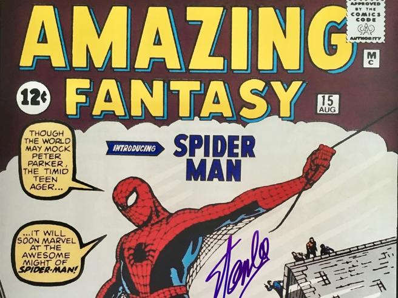

Spider-Man
Spider-Man è apparso per la prima volta in Amazing Fantasy #15 nel 1962, creato da Stan Lee e Steve Ditko.
La sua origine inizia con Peter Parker, un giovane ragazzo che acquisisce poteri incredibili dopo essere stato morso da un ragno radioattivo.
La creazione di Spider-Man ha cambiato il panorama dei fumetti, rendendo il supereroe più umano e riconoscibile, con problemi e sfide quotidiane, oltre a superpoteri.